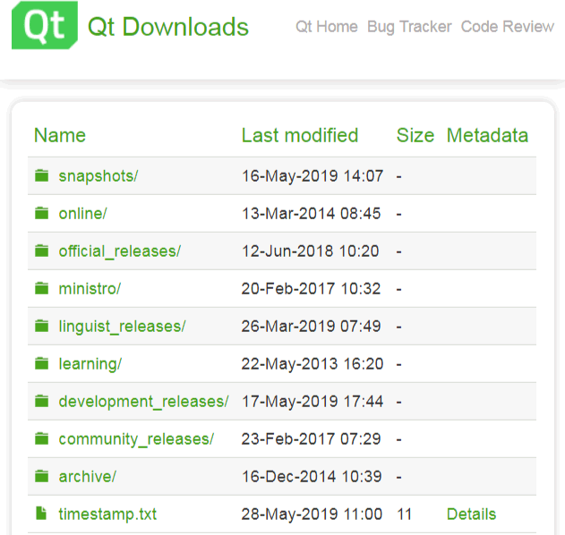
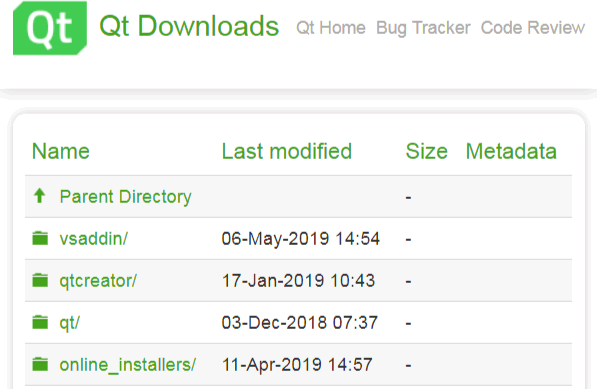
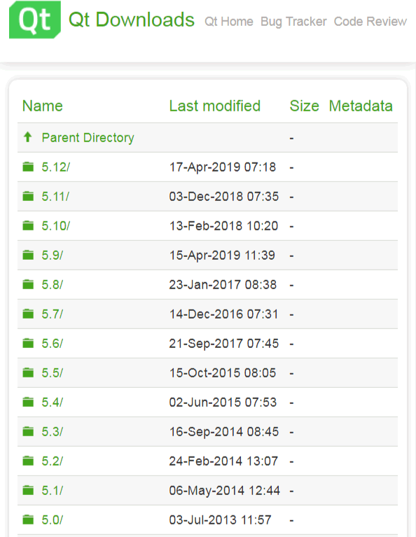
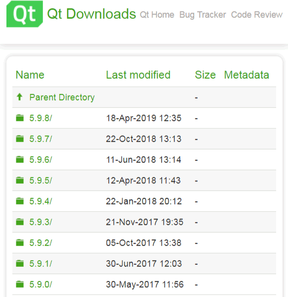
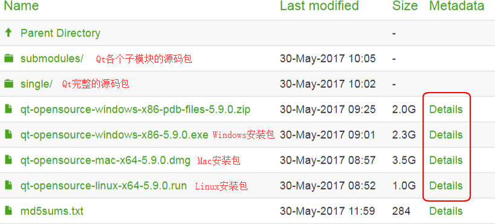
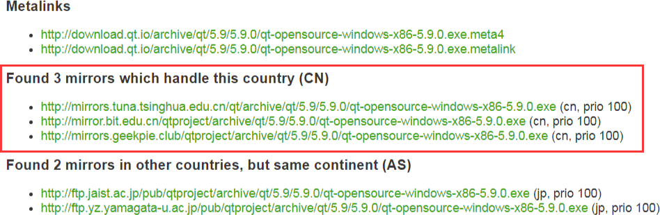
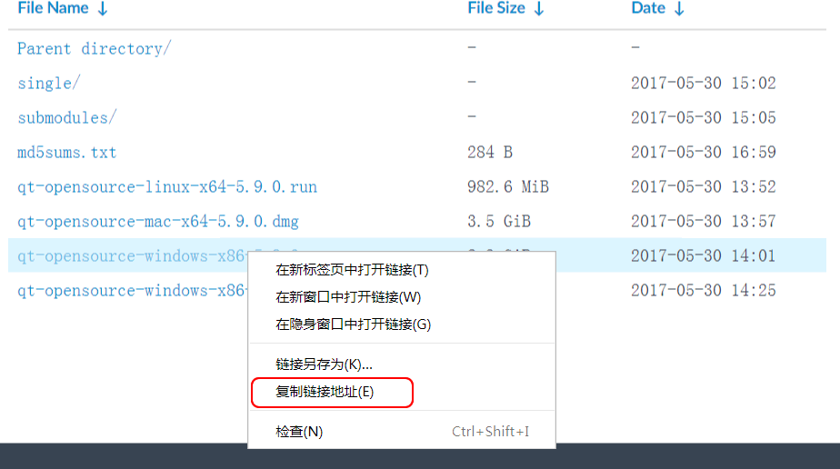
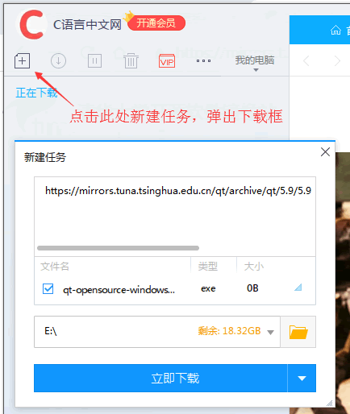
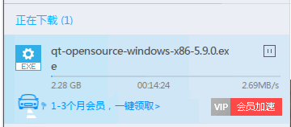

Qt下载（多种下载通道+所有版本）
Qt 体积很大，有 1GB~3GB，官方下载通道非常慢，相信很多读者会崩溃，所以建议大家使用国内的镜像网站（较快），或者使用迅雷下载（很快）。
作为 Qt 下载教程，本文会同时讲解以上三种下载方式。
archive 和 official_releases 两个目录都有最新的 Qt 开发环境安装包，我们以 archive 目录里的内容为例来说明。点击进入 archive 目录，会看到四个子目录：
我们再进入 qt 子目录 ，看到如下列表：
上图没有列完整，这个 qt 目录包含了所有的 Qt 版本，从 1.0 到目前的 5.12 。
由于 Qt 5.9 是一个长期技术支持版本（Long Term Support，LTS），在未来几年里都将有更新支持，因此，本教程以 Qt 5.9 LTS 版本为例进行讲解，并且所有实例程序均使用 Qt 5.9 编译测试通过。
这里解释一下 Qt 的版本号，比如 5.9.8 是完整的 Qt 版本号，第一个数字 5 是大版本号（major），第二个数字 9 是小版本号（minor），第三个数字 8 是补丁号（patch）。 只要前面两个数字相同，Qt 的特性就是一致的，最后的数字是对该版本的补丁更新。也就是说本教程对 5.9.* 系列的 Qt 都是通用的，下载 5.9.* 任意一个版本都可以，这里我们以下载 5.9.0。
点击 5.9.0，进入子目录：
根据不同的操作系统，选择不同的安装包即可，不用管源码包，除非你想自己编译或者阅读源码。
我们以 Windows 安装包（qt-opensource-windows-x86-5.9.0.exe）讲解一下 Qt 安装包命名规则，其中：
可以清楚地看到，Qt 在国内的有三个镜像网站可以下载，点击这些地址中的一个就可以下载，从国内镜像网站下载速度快一些。
国内镜像网站的结构和官方是类似的，我们在第一部分已经分析过了，这里不再赘述。
如何找到 Qt 软件的下载地址呢？以清华大学开源软件镜像站为例，进入 Qt 5.9.0 的下载目录（https://mirrors.tuna.tsinghua.edu.cn/qt/archive/qt/5.9/5.9.0/），在某个链接处单击鼠标右键，会弹出一个菜单，选择“复制链接地址”，如下图所示：
这样就把 Qt 5.9.0 的下载地址（具体为 https://mirrors.tuna.tsinghua.edu.cn/qt/archive/qt/5.9/5.9.0/qt-opensource-windows-x86-5.9.0.exe）复制到了剪切板，然后再粘贴到迅雷的下载框：
点击“立即下载”按钮，稍等片刻，迅雷会自动匹配到资源，速度飞快。
注意，常用的 Qt 版本一般都能匹配到资源，但是不保证每个版本都能匹配到资源，上面的例子仅对清华大学镜像站的 Qt 5.9.0 Windows 版（https://mirrors.tuna.tsinghua.edu.cn/qt/archive/qt/5.9/5.9.0/qt-opensource-windows-x86-5.9.0.exe）有效。
Qt wiki 网站会显示最新的正式版、LTS 版、正在开发中的版本等等，比主站（https://www.qt.io/）靠谱多了。Qt 主站因为商业推广的原因，安装包的下载步骤非常繁琐。
作为 Qt 下载教程，本文会同时讲解以上三种下载方式。
Qt 官方下载（非常慢）
Qt 官网有一个专门的资源下载网站，所有的开发环境和相关工具都可以从这里下载，具体地址是：http://download.qt.io/

图1：Qt 官方下载网站截图
图1：Qt 官方下载网站截图
| 目录 | 说明 |
|---|---|
| archive | 各种 Qt 开发工具安装包，新旧都有（可以下载 Qt 开发环境和源代码）。 |
| community_releases | 社区定制的 Qt 库，Tizen 版 Qt 以及 Qt 附加源码包。 |
| development_releases | 开发版，有新的和旧的不稳定版本，在 Qt 开发过程中的非正式版本。 |
| learning | 有学习 Qt 的文档教程和示范视频。 |
| ministro | 迷你版，目前是针对 Android 的版本。 |
| official_releases | 正式发布版，是与开发版相对的稳定版 Qt 库和开发工具（可以下载Qt开发环境和源代码）。 |
| online | Qt 在线安装源。 |
| snapshots | 预览版，最新的开发测试中的 Qt 库和开发工具。 |
archive 和 official_releases 两个目录都有最新的 Qt 开发环境安装包，我们以 archive 目录里的内容为例来说明。点击进入 archive 目录，会看到四个子目录：

图2：进入 archive 目录
图2：进入 archive 目录
| 目录 | 说明 |
|---|---|
| vsaddin | 这是 Qt 针对 Visual Studio 集成的插件，本教程基本不使用 Visual Studio ，所以不需要插件。 |
| qtcreator |
这是 Qt 官方的集成开发工具，但是 qtcreator 本身是个空壳，它没有编译套件和 Qt 开发库。 除了老版本的 Qt 4 需要手动下载 qtcreator、编译套件、Qt 开发库进行搭配之外，一般用不到。对于我们教程压根不需要下载它，因为 Qt 5 有专门的大安装包，里面包含开发需要的东西，并且能自动配置好。 |
| qt | 这是 Qt 开发环境的下载目录，我们刚说的 Qt 5 的大安装包就在这里面。 |
| online_installers | 在线安装器，国内用户不建议使用，在线安装是龟速，还经常断线。我们教程采用的全部是离线的大安装包。 |
我们再进入 qt 子目录 ，看到如下列表：

图3：进入 qt 子目录
图3：进入 qt 子目录
上图没有列完整，这个 qt 目录包含了所有的 Qt 版本，从 1.0 到目前的 5.12 。
由于 Qt 5.9 是一个长期技术支持版本（Long Term Support，LTS），在未来几年里都将有更新支持，因此，本教程以 Qt 5.9 LTS 版本为例进行讲解，并且所有实例程序均使用 Qt 5.9 编译测试通过。
进入 5.9 目录，会看到各种子版本：Qt 的上一个 LTS 版本是 5.6，它其实已经超出支持期了。

图4：Qt 5.9 的各个子版本
图4：Qt 5.9 的各个子版本
这里解释一下 Qt 的版本号，比如 5.9.8 是完整的 Qt 版本号，第一个数字 5 是大版本号（major），第二个数字 9 是小版本号（minor），第三个数字 8 是补丁号（patch）。 只要前面两个数字相同，Qt 的特性就是一致的，最后的数字是对该版本的补丁更新。也就是说本教程对 5.9.* 系列的 Qt 都是通用的，下载 5.9.* 任意一个版本都可以，这里我们以下载 5.9.0。
点击 5.9.0，进入子目录：

图5：Qt 5.9.0 下载页面
图5：Qt 5.9.0 下载页面
根据不同的操作系统，选择不同的安装包即可，不用管源码包，除非你想自己编译或者阅读源码。
我们以 Windows 安装包（qt-opensource-windows-x86-5.9.0.exe）讲解一下 Qt 安装包命名规则，其中：
- opensource 是指开源版本；
- windows 是指开发环境的操作系统；
- x86 是指 32 位系统；
- 5.9.0 是 Qt 版本号。
Qt 国内镜像站下载（较快）
请读者注意图5中最后一栏的 Details 链接（红色方框圈起来的地方）。点击 Details 链接可以进入详情页，在该页面可以看到文件的大小、校验和以及世界各地镜像下载链接（这才是重点）。

图6：国内镜像下载链接
图6：国内镜像下载链接
可以清楚地看到，Qt 在国内的有三个镜像网站可以下载，点击这些地址中的一个就可以下载，从国内镜像网站下载速度快一些。
国内镜像网站
这里给大家推荐几个国内著名的 Qt 镜像网站，主要是各个高校的：- 中国科学技术大学：http://mirrors.ustc.edu.cn/qtproject/
- 清华大学：https://mirrors.tuna.tsinghua.edu.cn/qt/
- 北京理工大学：http://mirror.bit.edu.cn/qtproject/
- 中国互联网络信息中心：https://mirrors.cnnic.cn/qt/
国内镜像网站的结构和官方是类似的，我们在第一部分已经分析过了，这里不再赘述。
迅雷下载（很快）
将 Qt 软件的下载地址复制到迅雷的下载框，如果迅雷官方有资源，就会自动识别，下载速度就很快了。如何找到 Qt 软件的下载地址呢？以清华大学开源软件镜像站为例，进入 Qt 5.9.0 的下载目录（https://mirrors.tuna.tsinghua.edu.cn/qt/archive/qt/5.9/5.9.0/），在某个链接处单击鼠标右键，会弹出一个菜单，选择“复制链接地址”，如下图所示：

图7：找到 Qt 下载地址
图7：找到 Qt 下载地址
这样就把 Qt 5.9.0 的下载地址（具体为 https://mirrors.tuna.tsinghua.edu.cn/qt/archive/qt/5.9/5.9.0/qt-opensource-windows-x86-5.9.0.exe）复制到了剪切板，然后再粘贴到迅雷的下载框：

图8：把Qt下载地址粘贴到迅雷下载框
图8：把Qt下载地址粘贴到迅雷下载框
点击“立即下载”按钮，稍等片刻，迅雷会自动匹配到资源，速度飞快。

图9：下载速度 2.7MB/s
图9：下载速度 2.7MB/s
注意，常用的 Qt 版本一般都能匹配到资源，但是不保证每个版本都能匹配到资源，上面的例子仅对清华大学镜像站的 Qt 5.9.0 Windows 版（https://mirrors.tuna.tsinghua.edu.cn/qt/archive/qt/5.9/5.9.0/qt-opensource-windows-x86-5.9.0.exe）有效。
扩展阅读
对 Qt 版本更新感兴趣的读者请访问 Qt wiki 网站，地址为：https://wiki.qt.io/MainQt wiki 网站会显示最新的正式版、LTS 版、正在开发中的版本等等，比主站（https://www.qt.io/）靠谱多了。Qt 主站因为商业推广的原因，安装包的下载步骤非常繁琐。
关注公众号「站长严长生」，在手机上阅读所有教程，随时随地都能学习。内含一款搜索神器，免费下载全网书籍和视频。

微信扫码关注公众号